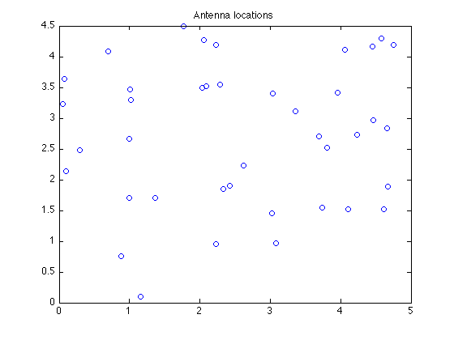
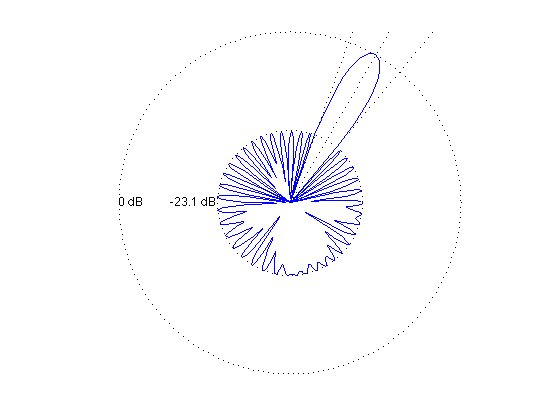

Minimize sidelobe level of an array with arbitrary 2-D geometry
ARRAY_GEOMETRY = '2D_RANDOM';
HAS_NULLS = 0;
lambda = 1;
theta_tar = 60;
half_beamwidth = 10;
if HAS_NULLS
theta_nulls = [95 110 120 140 225];
end
if strcmp( ARRAY_GEOMETRY, '2D_RANDOM' )
rand('state',0);
n = 40;
L = 5;
loc = L*rand(n,2);
angleRange = 360;
elseif strcmp( ARRAY_GEOMETRY, '1D_UNIFORM_LINE' )
n = 30;
d = 0.45*lambda;
loc = [d*[0:n-1]' zeros(n,1)];
angleRange = 180;
elseif strcmp( ARRAY_GEOMETRY, '2D_UNIFORM_LATTICE' )
m = 6; n = m^2;
d = 0.45*lambda;
loc = zeros(n,2);
for x = 0:m-1
for y = 0:m-1
loc(m*y+x+1,:) = [x y];
end
end
loc = loc*d;
angleRange = 360;
else
error('Undefined array geometry')
end
theta = [1:angleRange]';
A = kron(cos(pi*theta/180), loc(:,1)') + kron(sin(pi*theta/180), loc(:,2)');
A = exp(2*pi*i/lambda*A);
[diff_closest, ind_closest] = min( abs(theta - theta_tar) );
Atar = A(ind_closest,:);
if HAS_NULLS
Anull = []; ind_nulls = [];
for k = 1:length(theta_nulls)
[diff_closest, ind_closest] = min( abs(theta - theta_nulls(k)) );
Anull = [Anull; A(ind_closest,:)];
ind_nulls = [ind_nulls ind_closest];
end
end
ind = find(theta <= (theta_tar-half_beamwidth) | ...
theta >= (theta_tar+half_beamwidth) );
if HAS_NULLS, ind = setdiff(ind,ind_nulls); end;
As = A(ind,:);
cvx_begin
variable w(n) complex
minimize( max( abs(As*w) ) )
subject to
Atar*w == 1;
if HAS_NULLS
Anull*w == 0;
end
cvx_end
disp(['Problem is ' cvx_status])
if ~strfind(cvx_status,'Solved')
return
end
min_sidelobe_level = 20*log10( max(abs(As*w)) );
fprintf(1,'The minimum sidelobe level is %3.2f dB.\n\n',...
min_sidelobe_level );
figure(1), clf
plot(loc(:,1),loc(:,2),'o')
title('Antenna locations')
if angleRange == 180,
theta = [1:360]';
A = [ A; -A ];
end
y = A*w;
figure(2), clf
ymin = floor(0.1*min_sidelobe_level)*10-10; ymax = 0;
plot([1:360], 20*log10(abs(y)), ...
[theta_tar theta_tar],[ymin ymax],'r--',...
[theta_tar+half_beamwidth theta_tar+half_beamwidth],[ymin ymax],'g--',...
[theta_tar-half_beamwidth theta_tar-half_beamwidth],[ymin ymax],'g--');
if HAS_NULLS
hold on;
for k = 1:length(theta_nulls)
plot([theta_nulls(k) theta_nulls(k)],[ymin ymax],'m--');
end
hold off;
end
xlabel('look angle'), ylabel('mag y(theta) in dB');
axis([0 360 ymin ymax]);
figure(3), clf
zerodB = -ymin;
dBY = 20*log10(abs(y)) + zerodB;
ind = find( dBY <= 0 ); dBY(ind) = 0;
plot(dBY.*cos(pi*theta/180), dBY.*sin(pi*theta/180), '-');
axis([-zerodB zerodB -zerodB zerodB]), axis('off'), axis('square')
hold on
plot(zerodB*cos(pi*theta/180),zerodB*sin(pi*theta/180),'k:')
plot( (min_sidelobe_level + zerodB)*cos(pi*theta/180), ...
(min_sidelobe_level + zerodB)*sin(pi*theta/180),'k:')
text(-zerodB,0,'0 dB')
tt = text(-(min_sidelobe_level + zerodB),0,sprintf('%0.1f dB',min_sidelobe_level));
set(tt,'HorizontalAlignment','right');
theta_1 = theta_tar+half_beamwidth;
theta_2 = theta_tar-half_beamwidth;
plot([0 55*cos(theta_tar*pi/180)], [0 55*sin(theta_tar*pi/180)], 'k:')
plot([0 55*cos(theta_1*pi/180)], [0 55*sin(theta_1*pi/180)], 'k:')
plot([0 55*cos(theta_2*pi/180)], [0 55*sin(theta_2*pi/180)], 'k:')
if HAS_NULLS
for k = 1:length(theta_nulls)
plot([0 55*cos(theta_nulls(k)*pi/180)], ...
[0 55*sin(theta_nulls(k)*pi/180)], 'k:')
end
end
hold off
Calling sedumi: 1025 variables, 81 equality constraints
For improved efficiency, sedumi is solving the dual problem.
------------------------------------------------------------
SeDuMi 1.21 by AdvOL, 2005-2008 and Jos F. Sturm, 1998-2003.
Alg = 2: xz-corrector, Adaptive Step-Differentiation, theta = 0.250, beta = 0.500
eqs m = 81, order n = 685, dim = 1027, blocks = 343
nnz(A) = 55061 + 0, nnz(ADA) = 6561, nnz(L) = 3321
it : b*y gap delta rate t/tP* t/tD* feas cg cg prec
0 : 3.44E+02 0.000
1 : -7.91E-01 1.57E+02 0.000 0.4555 0.9000 0.9000 2.30 1 1 2.3E+02
2 : -1.28E-01 9.95E+01 0.000 0.6356 0.9000 0.9000 11.14 1 1 1.9E+01
3 : -1.06E-01 6.41E+01 0.000 0.6444 0.9000 0.9000 3.61 1 1 8.9E+00
4 : -8.38E-02 2.79E+01 0.000 0.4348 0.9000 0.9000 2.47 1 1 2.7E+00
5 : -7.78E-02 1.28E+01 0.000 0.4582 0.9000 0.9000 1.44 1 1 1.1E+00
6 : -7.47E-02 6.67E+00 0.000 0.5222 0.9000 0.9000 1.21 1 1 5.5E-01
7 : -7.26E-02 3.23E+00 0.000 0.4843 0.9000 0.9000 1.12 1 1 2.6E-01
8 : -7.13E-02 1.42E+00 0.000 0.4386 0.9000 0.9000 1.07 1 1 1.1E-01
9 : -7.06E-02 5.74E-01 0.000 0.4050 0.9000 0.9000 1.04 1 1 4.4E-02
10 : -7.04E-02 1.31E-01 0.000 0.2283 0.9122 0.9000 1.01 1 1 1.1E-02
11 : -7.03E-02 3.44E-02 0.000 0.2628 0.9070 0.9000 1.00 1 1 2.9E-03
12 : -7.03E-02 9.50E-03 0.000 0.2759 0.9018 0.9000 1.00 1 1 8.1E-04
13 : -7.03E-02 1.29E-03 0.000 0.1362 0.9000 0.0000 0.98 2 1 1.6E-04
14 : -7.03E-02 6.57E-05 0.000 0.0508 0.9901 0.9900 1.00 2 2 8.6E-06
15 : -7.03E-02 1.66E-05 0.000 0.2531 0.9370 0.9000 1.00 4 4 2.8E-06
16 : -7.03E-02 6.03E-06 0.000 0.3623 0.9048 0.9000 1.13 4 4 1.1E-06
17 : -7.03E-02 1.15E-06 0.000 0.1906 0.9009 0.9000 1.00 5 5 2.0E-07
18 : -7.03E-02 1.53E-07 0.000 0.1328 0.9074 0.9000 1.00 7 8 3.0E-08
19 : -7.03E-02 2.10E-08 0.000 0.1376 0.9065 0.9000 1.00 9 9 4.7E-09
iter seconds digits c*x b*y
19 0.3 8.7 -7.0302089555e-02 -7.0302089704e-02
|Ax-b| = 4.0e-09, [Ay-c]_+ = 4.6E-10, |x|= 4.7e-01, |y|= 1.1e+02
Detailed timing (sec)
Pre IPM Post
4.000E-02 3.000E-01 1.000E-02
Max-norms: ||b||=1, ||c|| = 1,
Cholesky |add|=0, |skip| = 2, ||L.L|| = 5645.42.
------------------------------------------------------------
Status: Solved
Optimal value (cvx_optval): +0.0703021
Problem is Solved
The minimum sidelobe level is -23.06 dB.


